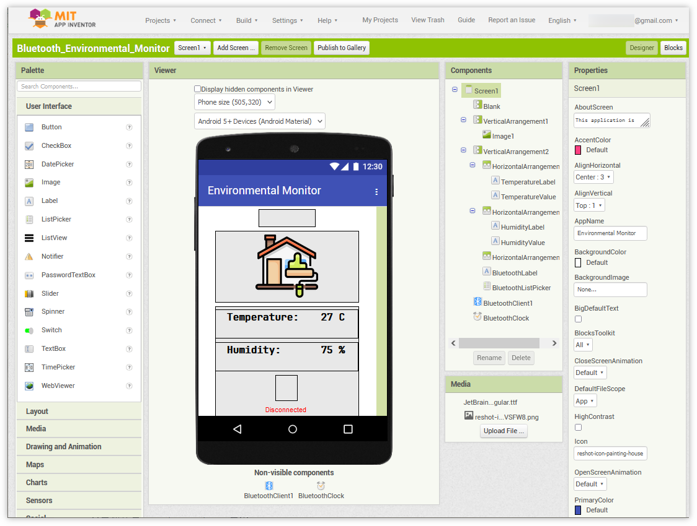
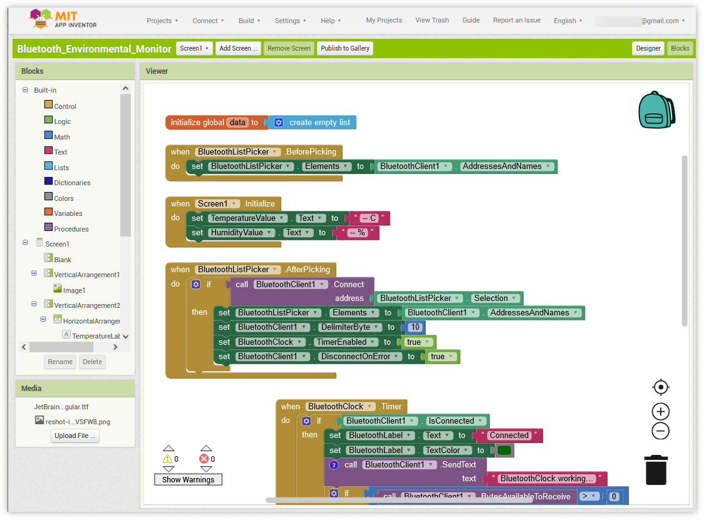
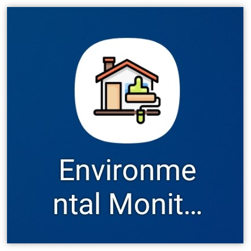
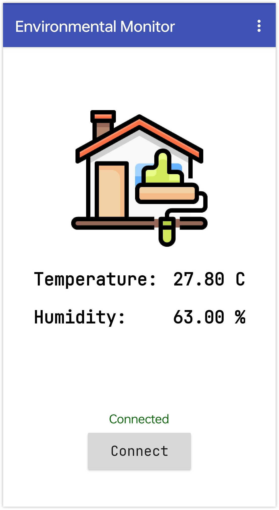

Bemerkung
Hallo und willkommen in der SunFounder Raspberry Pi & Arduino & ESP32 Enthusiasten-Gemeinschaft auf Facebook! Tauchen Sie tiefer ein in die Welt von Raspberry Pi, Arduino und ESP32 mit anderen Enthusiasten.
Warum beitreten?
Expertenunterstützung: Lösen Sie Nachverkaufsprobleme und technische Herausforderungen mit Hilfe unserer Gemeinschaft und unseres Teams.
Lernen & Teilen: Tauschen Sie Tipps und Anleitungen aus, um Ihre Fähigkeiten zu verbessern.
Exklusive Vorschauen: Erhalten Sie frühzeitigen Zugang zu neuen Produktankündigungen und exklusiven Einblicken.
Spezialrabatte: Genießen Sie exklusive Rabatte auf unsere neuesten Produkte.
Festliche Aktionen und Gewinnspiele: Nehmen Sie an Gewinnspielen und Feiertagsaktionen teil.
👉 Sind Sie bereit, mit uns zu erkunden und zu erschaffen? Klicken Sie auf [hier] und treten Sie heute bei!
Bluetooth-Umweltmonitor
Dieses Projekt nutzt eine Android-App, die mit dem MIT App Inventor erstellt wurde, um Umweltdaten von einem Arduino-Board zu empfangen und anzuzeigen. Das Arduino-Board sammelt Daten von einem DHT11-Sensor, um Temperatur und Luftfeuchtigkeit zu messen. Diese Daten werden dann über das JDY-31-Modul via Bluetooth übertragen. Die App zeigt die Daten auf dem Bildschirm an, sobald sie empfangen werden.
Die Android-Anwendung wird mit einer kostenlosen Webplattform namens MIT App Inventor erstellt. Das Projekt bietet eine hervorragende Gelegenheit, Erfahrungen in der Schnittstellenanbindung eines Arduino-Boards an ein Smartphone zu sammeln.
1. Den Schaltkreis aufbauen
Bemerkung
Das Kit kann verschiedene Versionen des DHT11-Moduls enthalten. Bitte bestätigen Sie die Verkabelungsmethode entsprechend dem Modul, das Sie haben.
Modul |
Diagramm |
|---|---|
|
|


2. Die Android-App erstellen
Die Android-Anwendung wird mit einer kostenlosen Webanwendung namens MIT App Inventor entwickelt. Der MIT App Inventor ist ein ausgezeichneter Einstiegspunkt für die Android-Entwicklung, da er intuitive Drag-and-Drop-Funktionen für die Erstellung einfacher Anwendungen bietet.
Jetzt geht’s los.
Besuchen Sie Get Started with MIT App Inventor und klicken Sie auf „Online-Tool“, um sich anzumelden. Sie benötigen ein Google-Konto, um sich beim MIT App Inventor zu registrieren.

Nach der Anmeldung navigieren Sie zu Projects -> Import project (.aia) from my computer. Laden Sie anschließend die Datei
Bluetooth_controlled_lock.aiahoch, die im Verzeichnisultimate-sensor-kit\iot_project\bluetooth\05-Bluetooth_environmental_monitorzu finden ist.Sie können die Datei auch direkt hier herunterladen:
Bluetooth_Environmental_Monitor.aia
Nach dem Hochladen der
.aia-Datei wird die Anwendung im MIT App Inventor angezeigt. Es handelt sich hierbei um eine vorkonfigurierte Vorlage, die Sie nach einer Einarbeitungsphase im MIT App Inventor anpassen können.Im MIT App Inventor gibt es zwei Hauptbereiche: den Designer und die Blocks. Sie können zwischen diesen beiden Bereichen in der oberen rechten Ecke der Seite wechseln.

Der Designer ermöglicht das Hinzufügen von Buttons, Texten, Bildschirmen und das Anpassen des Gesamtdesigns Ihrer Anwendung.

Als Nächstes gibt es den Bereich Blocks. Hier können Sie benutzerdefinierte Funktionen für Ihre App erstellen und so jedes Element der Benutzeroberfläche der App programmieren, um gewünschte Funktionen zu erreichen.

Um die Anwendung auf einem Smartphone zu installieren, navigieren Sie zum Build-Tab.

Sie können eine
.apk-Datei generieren. Wählen Sie diese Option, erscheint eine Seite, die Ihnen die Wahl lässt, entweder eine.apk-Datei herunterzuladen oder einen QR-Code für die Installation zu scannen. Folgen Sie der Installationsanleitung, um die Installation der Anwendung abzuschließen.Sie können auch unsere bereits kompilierte APK hier herunterladen:
Bluetooth_Environmental_Monitor.apkWenn Sie die App im Google Play Store oder einem anderen App-Marktplatz veröffentlichen möchten, können Sie eine
.aab-Datei generieren.
3. Hochladen des Codes
Öffnen Sie die Datei
05-Bluetooth_environmental_monitor.inoim Pfadultimate-sensor-kit\iot_project\bluetooth\05-Bluetooth_environmental_monitoroder kopieren Sie den Code in die Arduino IDE.Bemerkung
Um die Bibliothek zu installieren, verwenden Sie den Arduino-Bibliotheksmanager und suchen Sie nach „DHT sensor library“ und installieren Sie diese.
Wählen Sie das korrekte Board und den Port aus und klicken Sie auf die Schaltfläche Hochladen.
Öffnen Sie den seriellen Monitor (Baudrate auf 9600 einstellen), um Debug-Nachrichten zu sehen.
4. Verbindung der App und des Bluetooth-Moduls
Vergewissern Sie sich, dass die zuvor erstellte Anwendung auf Ihrem Smartphone installiert ist.
Aktivieren Sie zunächst Bluetooth auf Ihrem Smartphone.

Navigieren Sie zu den Bluetooth-Einstellungen auf Ihrem Smartphone und suchen Sie nach Namen wie JDY-31-SPP.

Nach dem Anklicken stimmen Sie der Kopplungsanfrage im aufspringenden Fenster zu. Falls ein Kopplungscode erforderlich ist, geben Sie „1234“ ein.

Öffnen Sie nun die neu installierte App Environmental Monitor.

In der App klicken Sie auf die Schaltfläche Connect, um eine Verbindung zwischen der App und dem Bluetooth-Modul herzustellen.

Diese Seite zeigt eine Liste aller gekoppelten Bluetooth-Geräte an. Wählen Sie die Option
xx.xx.xx.xx.xx.xx JDY-31-SPPaus der Liste. Der Name jedes Geräts steht neben seiner MAC-Adresse.
Wenn Sie auf der oben gezeigten Seite keine Geräte sehen, könnte das daran liegen, dass der App nicht erlaubt ist, nach nahegelegenen Geräten zu suchen. In diesem Fall müssen Sie die Einstellungen manuell anpassen.
Um zur App-Info-Seite zu gelangen, halten Sie das App-Symbol gedrückt und wählen Sie es aus. Alternativ können Sie auch eine andere Methode verwenden, um auf diese Seite zu gelangen.

Navigieren Sie zur Seite Berechtigungen.

Um der App die Suche nach nahegelegenen Geräten zu ermöglichen, gehen Sie zu Nahegelegene Geräte und wählen Sie Immer.

Starten Sie nun die App neu und wiederholen Sie die Schritte 5 und 6, um erfolgreich eine Bluetooth-Verbindung herzustellen.
Nach einer erfolgreichen Verbindung werden Sie zur Hauptseite weitergeleitet, auf der Temperatur und Luftfeuchtigkeit angezeigt werden.



5. Code-Erläuterung
Einrichtung der Bluetooth-Kommunikation und des DHT11-Sensors.
#include <SoftwareSerial.h> const int bluetoothTx = 3; const int bluetoothRx = 4; SoftwareSerial bleSerial(bluetoothTx, bluetoothRx); #include <DHT.h> #define DHTPIN 2 #define DHTTYPE DHT11 DHT dht(DHTPIN, DHTTYPE);
Der Code bindet die erforderlichen Bibliotheken ein und definiert die Pins für das Bluetooth-Modul sowie den DHT11-Sensor. Zudem werden Objekte für die Bluetooth-Kommunikation und den DHT11 deklariert.
Initialisierung in der Setup-Funktion.
void setup() { Serial.begin(9600); bleSerial.begin(9600); dht.begin(); }
Dieser Abschnitt initialisiert die serielle Kommunikation für Debugging-Zwecke sowie das Bluetooth-Modul und den DHT-Sensor.
Datenerfassung und Übermittlung via Bluetooth.
void loop() { delay(2000); float humidity = dht.readHumidity(); float temperature = dht.readTemperature(); // Check if any reads failed and exit early (to try again). if (isnan(humidity) || isnan(temperature)) { Serial.println(F("Failed to read from DHT sensor!")); return; } // For debug // Print the humidity and temperature to the serial monitor Serial.print(F("Humidity: ")); Serial.print(humidity); Serial.print(F("% Temperature: ")); Serial.print(temperature); Serial.println(F("°C ")); sensorData = String(temperature) + "," + String(humidity); // Concatenate temperature and humidity values Serial.print("Data to send: "); Serial.println(sensorData); bleSerial.println(sensorData); // Send temperature and humidity values to the Bluetooth module }
Dieser Abschnitt liest alle 2 Sekunden Temperatur und Luftfeuchtigkeit vom DHT11-Sensor. Bei fehlerhaften Messungen wird eine Fehlermeldung ausgegeben. Ansonsten werden die Messdaten im seriellen Monitor angezeigt und in einem kommagetrennten Format via Bluetooth-Modul gesendet. Die App wertet die im Format „Temperatur,Luftfeuchtigkeit“ empfangenen Daten aus und stellt sie in der Benutzeroberfläche dar.